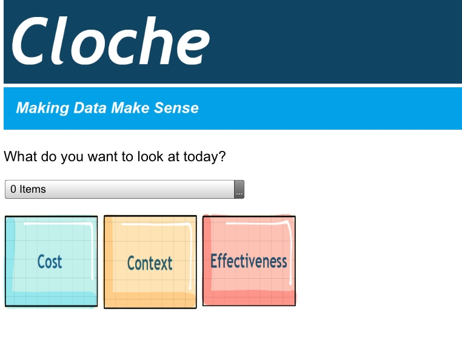
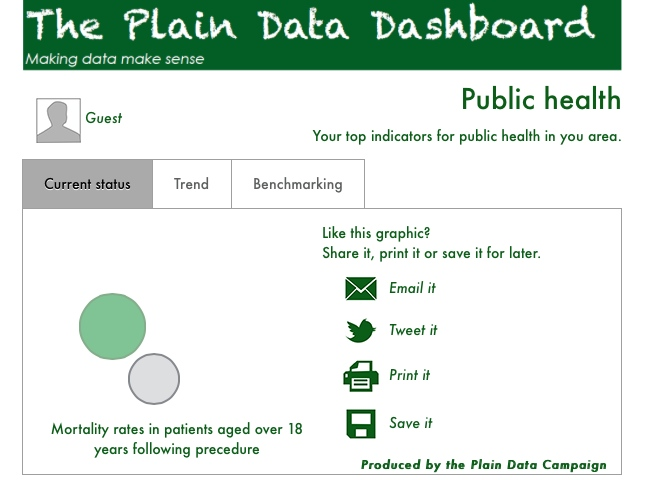

Working towards the perfect plain data dashboard is a series of little steps; each iteration shows slight changes from the last version.
We decided early on that this process should be open to everyone ... even the early back-of-an-envelope sketches.
Each version has been tested on our long-suffering friends and mentors, and the feedback they gave us was poured into making the next one.
Here's our version history:

We weren't kidding about the back-of-an-envelope thing.
Our first ever prototype was a set of quick drawings done on an iPad.
We were starting to explore what the simplest possible interface could be that
would still take the user to the information they need to see.
Feedback from the group told us that we weren't being
clear enough about the problem we were trying to solve. Showing is better than telling -
so the following week we decided to take an actual document
looked at by our scrutiny committee, and work out how we would have presented it.
We used an eight page report on a decision about a new roundabout, and
ended up with this one page mock up.

This seemed to go down well, so we
created a more finished version.
But the fact is, creating a one page report with all the
relevant information presented better is still just as much work as writing the
original paper it was based on. We wanted to streamline the process and create something
that would talk to our back end data stores, pulling through just the right
information according to the context the user had selected. So - back to the
iPad, and drawing another version of the landing screen.


So you can see by now we went back and
forth a bit as we tried to work out what we were trying to present to whom.
This is just Iteration 2, but we made it available online and added clickable
links to background information.
At this point we started working with
Project Cosmic to pull together a functional mock up, clickable HTML that took the user
through the screens as if it were the full working version.
Having something that
people could interact with as if it were the full working tool made a huge difference
to the feedback. Now people could see exactly where we were coming from, and exactly where
we were going wrong. Never underestimate the value of detailed, personal feedback from
somebody who has lived the problem.


Then we discovered wireframing.
Thanks to a session at Hub Westminster, we found put about the huge array of simple
and often free tools we could use to design the screens for our prototype.
This one was done in Keynotopia.
Having visual elements for things like drop down boxes and menus made us think a lot
more about the navigation and how it ought to be structured for the user.
Note: we abandoned this particular screen when one tester told us it made him think
of "two steps forward, one step back ..."
- not the image we wanted to convey!
With this iteration we had finally made the time to
talk to our real 'customers' - the Devon councillors who sit on scrutiny committees.
Thinking about their areas of responsibility and the outcomes they are interested in,
we had a chance to begin looking into the data available to us, find out what the best sources are
and work out how we might fetch it and display it.
This is nowhere near as simple as it sounds ...
There is so much data out there, that tracking down 'just the right thing'
is almost impossible. You can never be sure you've got the best possible
data for the job. So we learned a lesson there about 'good enough for now', and
how to prioritise and select for a minimum viable product today rather
than a full bells-and-whistles premium offering (maybe) next month.


We had assumed that our councillors would
be using the final product on computers and mobile devices, purely as a research and information tool.
But one of our testers asked:
- how do I share this chart with someone?
- how do I embed this in my blog?
- what if I want to tweet this to someone?
- can I download and/or print this for later, when I won't have broadband?
So we gave some thought to how we could enable sharing and downloading, and what the
user view ought to look like for that. We discovered the concept of the social object,
a thing that people can share in order to communicate and bond over a topic.
All of the insights from the last four
iterations got pushed into building this one. We worked out the navigation, we thought about the
sharing functionality, and we settled on a set of indicators we could collect
reliable data for.
At about this stage we were also lucky enough to get some time
talking to a friendly developer, and he gave us a short sharp induction
in 'How to be a good client' for which we, and Project Cosmic who were putting
together the prototype, wholeheartedly thank him.
This might sound trivial, but it's far too easy to be difficult without ever meaning to.
Asking for things that look simple but would take hours of extra time; being vague
about what a button needs to do, and why; sending a pile of wireframes without
explaining how you're supposed to navigate between them; these are
all things we learned to avoid.
Note: of course we made different, more advanced mistakes instead. But we got there in the end.
Iteration 9 was ready just in time to
show to people at a 'Meet the customer' session on the Accelerator programme. Perfect timing,
as we heard several times over that having a prototype that people can look at and interact
with is worth a dozen elevator pitches. Needless to say, we felt quite smug about it all.
This next iteration is a refinement of the last with a bit of thinking about branding.
Although we were and still are Devon County Council employees, we were under some pressure to
come up with a brand identity for the tool and think about how we wanted it to be perceived.
So this one looks very different to the previous one but really, the changes are nearly all cosmetic.
Note: choosing the right datasets out of the hundreds available, is nothing compared to
trying to select just the right font ...
This one is another drawn mock-up.
Having finished the Accelerator programme and returned to the day job (thank you to the
colleague who pointed out that we were now in the 'decelerator' phase) we had a
look at what we'd built so far
Leaving behind the need to brand the tool as if we were an independent start up looking to trade,
we began to work out how we could show that our dashboard was better than / different to all the other dashboards.
That's when we started to talk in terms of the 'data storyboard'. A dashboard is a bunch of indicator lights.
A storyboard conveys progress and experience.
So maybe we went a bit mad with the visuals ... but we deliberately wanted to
differentiate our idea from the others. Data is messy and it's about people, who are messy,
and the issues they experience, which are messy. Why should the tools we use to talk
about the situation try to be unemotional and mechanical? Hence the storybook feel. That, and the fact that
Devon is a beautiful place and we felt Devon's data storyboard should try to get that across.

OK, this isn't really a new
iteration - it's another screen from Iteration 11. But it represents another realisation;
that if we are going to show what's important to real people in real situations,
we need to add context. We collect a lot of supporting information about risk, mitigation, impact
and background factors that don't make it into the dashboards. We think they should.
The next iteration after this is our current prototype ...
Take a look »